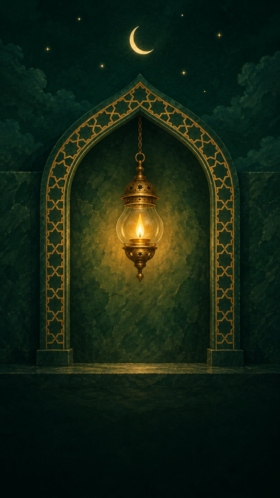

Unchaind is the best-built faith app for quitting porn, and it is written for Christians. This is a Muslim version of it, screen by screen in Unchaind's own order. It runs on Hisn's blocking engine and carries every tool from our general Android edition, Unrot. Unrot's sprout under glass becomes a lamp in a niche.
Allah is the Light of the heavens and the earth. The similitude of His light is as a niche wherein is a lamp. The lamp is in a glass.
Qur'an 24:35, Pickthall (public domain). Sūrat an-Nūr also holds the gaze verses (24:30–31) and "follow not the footsteps of the devil" (24:21).

All 89 screens the owner captured, in order: a 14-question quiz, a calculated "result", 5 harm slides, 6 benefit slides, goals, 5 pledges, a rating ask, a quit date, 5 paywall screens and FAQ, a tour, then the app itself.
| Unchaind # | Screen | What Unchaind does | Hisn | |
|---|---|---|---|---|
| First run | ||||
| 1 | Splash | 1 John 3:1 | keep | Qur'an 24:30 over the unlit lamp |
| 2 | Welcome | "God has called you to overcome"; three pills | keep | "Guard your gaze. Keep your heart lit." Three promises Hisn can keep; no account |
| 3–15 | Quiz, 14 questions | Frequency, age at first exposure, arousal, gender, faith, where you heard of us, name | change | Seven questions, each changes something: what to guard, where it starts, when it's hardest, your prayers now, how you feel after, how to address you (Arabic grammar needs it), your name. No sexual questions |
| 16–17 | "Calculating", 37% result | Invented chart | change | "What you told us": your own answers read back, with the step Hisn takes for each |
| 18 | Symptoms | Guilt, far from God | change | "How do you feel after?", which leads to the Return path |
| 19 | Notification ask | Shows sample notifications first | keep | Sample notices: Fajr, the verse, the reflection |
| 20–24 | Five harm slides | Drug, cycle, rewires body, separates from God, you can be free | change | Three verse slides: footsteps (24:21), the gaze first (24:30), the door is open (39:53) |
| 25–30 | Six benefit slides | Emoji art, "Let's begin" | change | One screen on how the lamp works, with the painted flames |
| 31–32 | Goals | Energy, mood, faith, relationships, purpose, prayer | keep | Pray on time, lower my gaze, Qur'an daily, nearer to Allah, marriage, family, focus, energy |
| 33–36 | Five pledges | Hold to commit, a verse each | keep | Five pledges with 1:5, 24:30, 24:21, 65:2, 3:135. Hold to commit; "Not now" is always there |
| 37 | Rate us | Before any use | drop | Asked once, after 30 nights |
| 38 | Quit date | "You will quit by 22 Aug" | change | Your first 40 nights in four parts. The date shown is counting, not a promise |
| 39–52 | Paywall × 5, FAQ | Subscription, countdown, "57,000 users" | drop | Free and open source. One optional ṣadaqa screen in You |
| Home and tools | ||||
| 53–57 | Tour | Five coach marks | keep | Three coach marks: the lamp, Help now, the shield chip |
| 58–60 | Home | Days, live timer, tasks, verse, toolbox, progress, red panic, community | keep | Painted lamp, nights, live timer, the five prayers, Help now, today's three, verse of the day, Unrot's numbers |
| 61–65 | Progress | Gauge, calendar, milestones, radar, relapse risk "High" | change | Unrot's feed gauge, a calendar of lamps, painted stations, a radar from your own answers. No risk score |
| 66 | Community | Public posts and comments | change | Du'a wall: anonymous requests, and the only reply is "I made du'a for you" |
| 67, 81 | AI chat companion | "Talk to a companion" | change | A real companion you choose, who sees nights only (guardian pairing). No AI rulings |
| 68–71 | Daily reflection | Ten-point ratings, journal, reading summary, vow | keep | Evening muḥāsaba, morning intention, today's reading, on Unrot's Today's three and check-in |
| 72–77 | Widget guide | Five steps to add it | change | Android pins the widget in one tap |
| 77–78 | Content blocker | One switch, "43M+ sites" | change | The fortress: five towers, one per layer; Unrot's Shield tabs below |
| 79 | Bible reader | Full Bible, notes, mark as read | keep | The full Qurʾān with Pickthall, reading paths, notes on this phone |
| Hard moments | ||||
| 80–81 | Panic button | "You promised yourself and God", a list of harms, two doors | change | Your own pledge and reason, 2:186, three doors. No list of harms |
| 82 | Log relapse | Date, "streak 0 days" | change | Return: 39:53, istighfār, two rakʿahs of tawbah, one change. Total nights are kept |
| 83–84 | Support, take control | Companion, breathing, then prayer | keep | Breathing with dhikr, then wuḍūʾ, two rakʿahs, Unrot's Instead list, your companion |
| Not in Unchaind, carried over from Unrot | ||||
| — | Glass crack and gold seal | — | Unrot | A spot on the glass; istighfār with three breaths within 10 minutes polishes it (Tirmidhī 3334) |
| — | Hold Breathe | — | Unrot | Hold Help now for quick choices: breathe, My notes, Lock, Focus |
| — | Focus now | — | Unrot | Feeds closed for a set time; it pauses for the adhān and resumes after |
| — | Instead | — | Unrot | Your own ideas plus wuḍūʾ, a page of Qurʾān, a walk, calling your parents. One tap closes feeds for 10 minutes |
| — | Open Wait | — | Unrot | A short wait before chosen apps, with a dhikr to say while it counts down |
| — | Quiet hours, gray screen | — | Unrot | Set by prayer times: after ʿIshāʾ until Fajr, the screen goes gray and feeds rest |
| — | Feeds before and after, time given back | — | Unrot | Kept as they are, with what the time became (Qurʾān read, prayers on time) from your own check-ins |
| — | Kept out, private | — | Unrot | Adult pages closed and blocked requests, on the phone only, never shared |
| — | Lock, lists, limits, apps, health check | — | Unrot | All in the More sheet, as in Unrot |
| Settings | ||||
| 85–89 | Settings, profile | Account, sync, check-in time, Bible version, goals, target days | change | No account. Prayer times (method, Asr), translation, Hijri offset, reminders, goals, your pledge, companion, ṣadaqa |
Made with Figma's image model, in sheets so the style holds. The originals are in "Hisn – The Lamp art" in your Figma drafts.
Unchaind takes 52 screens before the app opens. Hisn takes 17 and asks for nothing it doesn't use.
Unchaind's panic flow, in its order: your promise, the doors, breathing, then prayer.
Today, Shield, Progress, You and the More sheet already exist for the general edition. Hisn gets them with its own palette, the painted lamp scenes, a Read tab and the prayer row. The spot and polish reuse GlassState.
Dhikr breathing on the existing Breathe screen, the three doors, the after-steps with Instead, and Return with one change.
Seven questions, "What you told us", three verse slides, goals, five pledges, the 40-night plan.
Qurʾān text and Pickthall as a data pack, four reading paths, prayer times calculated on the phone that drive quiet hours, Focus and Open Wait.
The calendar of lamps, painted stations, the radar, the widget pinned in one tap, settings.
Is the du'a wall worth a small server? Who reviews the religious text? Should the lamp be repainted at higher resolution, or animated in Rive?